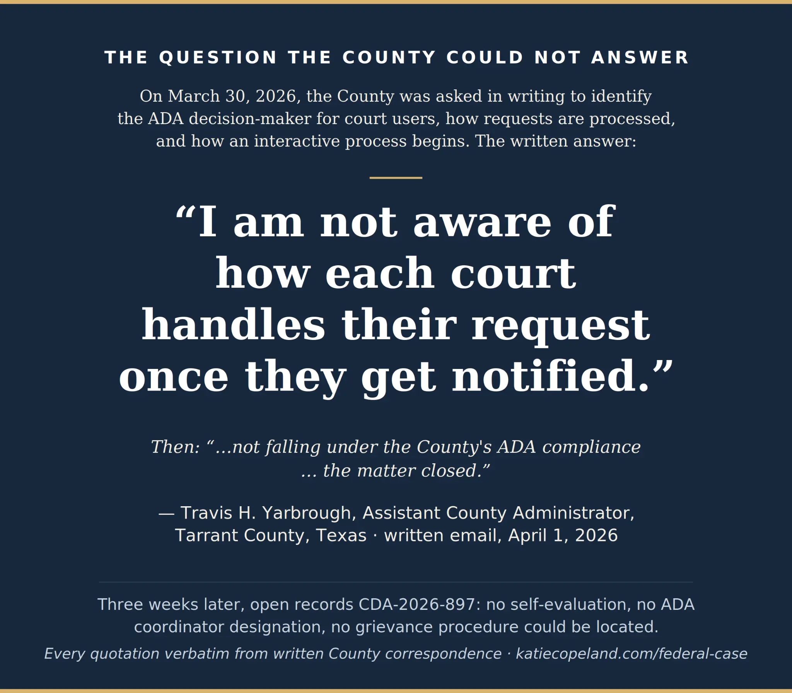
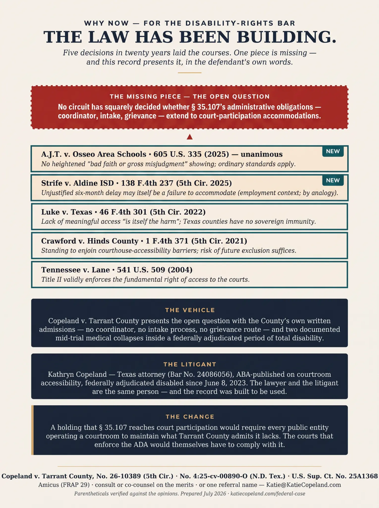
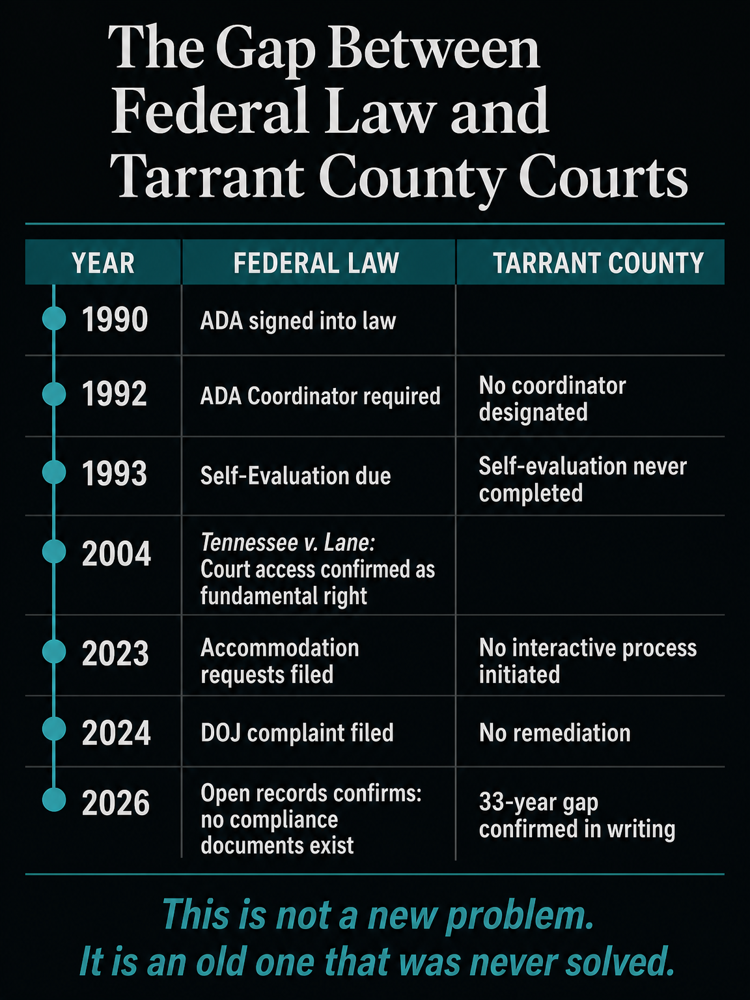
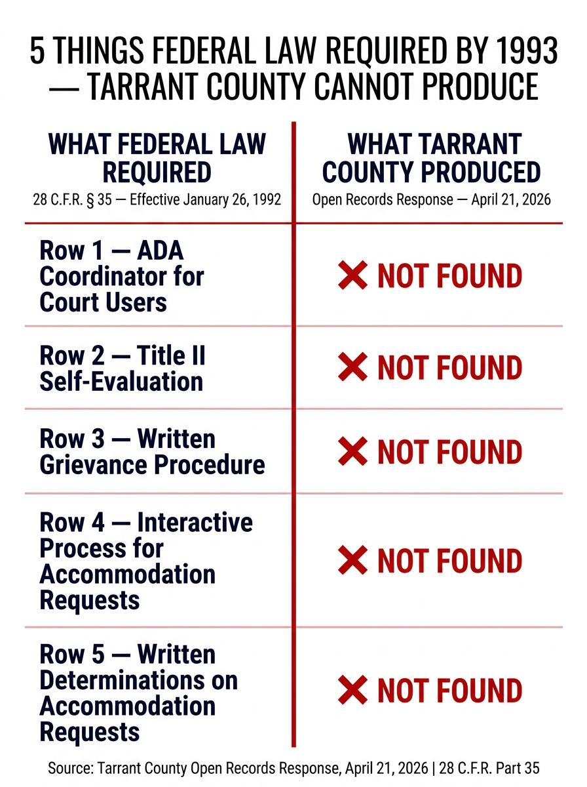
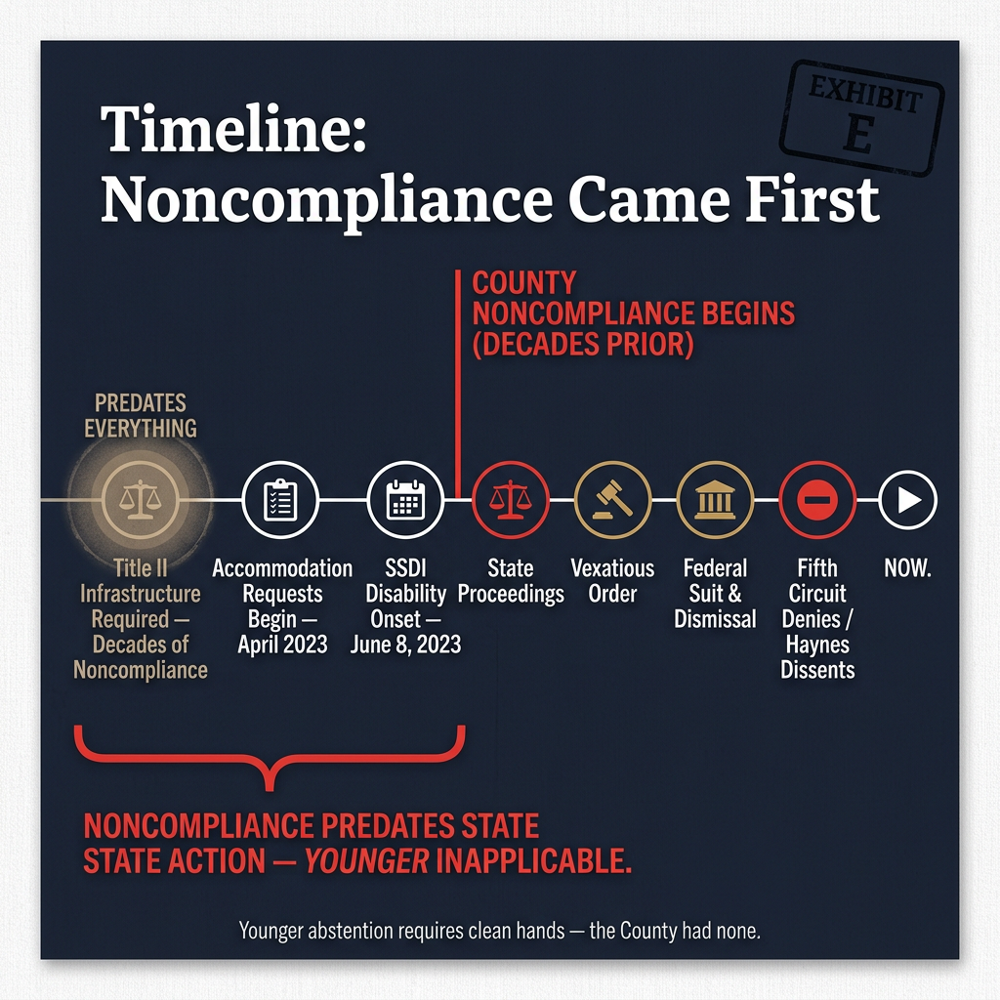
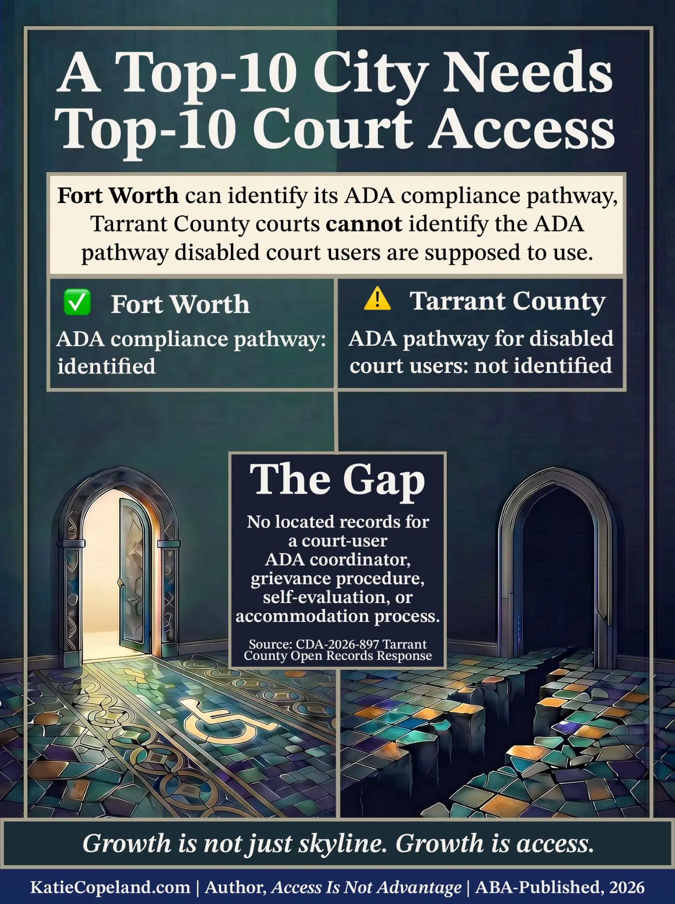

Copeland v. Tarrant County
No. 26-10389 (5th Cir.) · No. 4:25-cv-00890-O (N.D. Tex.) · U.S. Sup. Ct. No. 25A1368
This portal is prepared for civil-rights counsel, disability-rights advocates, and potential amici. It presents a structural Title II access-to-courts question — the "Closed Loop" — in which a county court system's documented absence of ADA administrative infrastructure made meaningful access to the courts unavailable to a disabled litigant, and the resulting exclusion was never reviewed on the merits at any level.
The Question Presented
Whether a county's failure to establish any of the administrative infrastructure required by 28 C.F.R. § 35.107 — a designated ADA coordinator, a self-evaluation, and a grievance procedure — constitutes a per se violation of Title II of the Americans with Disabilities Act, and whether a disabled litigant who was denied meaningful access to court proceedings as a result has standing to seek prospective injunctive relief without first exhausting a grievance process that does not exist.
No circuit has squarely decided whether § 35.107's administrative obligations — coordinator, intake, grievance — extend to court-participation accommodations. This record presents that question with the County's own written admissions as the evidentiary foundation.
The plaintiff is a licensed Texas attorney (State Bar No. 24086056) and ABA-published author on disability accommodation in state courts. The record has been organized for handoff to counsel. She is seeking representation precisely because she understands what this case requires — including that it should not be litigated from crisis mode, pro se.
In the County's Own Words
Every quotation in the graphics below is verbatim from the County's written communications and open-records responses, or from certified court transcripts. Click any graphic to view full size.
![Horizontal timeline infographic titled 'Adjudicated — The Entire Time.' A navy bedrock band spans the full width of the bottom of the image, labeled: 'Federally Adjudicated Total Disability — onset June 8, 2023 — ALJ Finding 11, fully favorable SSDI decision, April 10, 2026.' Above the bedrock band, a chronological timeline plots the following events from left to right: April 2023 — First ADA accommodations motion filed, ten accommodations requested before any trial, no interactive process, no written determination; August 17, 2023 — Medical collapse requiring emergency evaluation during trial, blood-sugar reading documented on the record; November 2023 — Amended ADA motion filed with speech-language pathologist evaluation attached; April 17, 2024 — County ADA Administration writes in email: 'Your ADA request would need to go directly through the court your case is assigned to'; May 6, 2024 — Court states 'We're not going to do that' (RR Vol. 19 at 24), documented cognitive collapse on the record ('I just lost — I have to start my brain back,' RR Vol. 19 at 31–32); May 31, 2024 — Final judgment: conservatorship lost, supervised visitation, six-figure attorney's fee award. Every event on the timeline falls within the federally adjudicated period of total disability. Source: ALJ Finding 11, SSA fully favorable decision, April 10, 2026; RR Vols. 11–12, 19–20; Tarrant County email, April 17, 2024.](assets/Adjudicated-TheEntireTime(bedrock).webp)
Every event above this line occurred inside the period the Social Security Administration adjudicated as total disability (onset June 8, 2023). — ALJ Finding 11, fully favorable decision, April 10, 2026. Every quotation verbatim from filed documents and certified transcripts.
![Navy and gold quote card titled 'The Question the County Could Not Answer.' Body text reads: 'On March 30, 2026, the County was asked in writing to identify the ADA decision-maker for court users, how requests are processed, and how an interactive process begins. The written answer:' The large-print quotation reads verbatim: 'I am not aware of how each court handles their request once they get notified.' Below the quotation in smaller italic text: 'Then: not falling under the County’s ADA compliance… the matter closed.' Attribution line: '— Travis H. Yarbrough, Assistant County Administrator, Tarrant County, Texas · written email, April 1, 2026.' Footer text: 'Three weeks later, open records CDA-2026-897: no self-evaluation, no ADA coordinator designation, no grievance procedure could be located. Every quotation verbatim from written County correspondence · katiecopeland.com/federal-case.' Source: Tarrant County email, April 1, 2026, filed as Appendix p. 047 in Copeland v. Tarrant County, No. 4:25-cv-00890-O (N.D. Tex.); Open Records Response CDA-2026-897, April 21, 2026.](assets/QuoteCard(verbatim,clean).webp)
Travis Yarbrough, Assistant County Administrator, Tarrant County — email of April 1, 2026, filed in Copeland v. Tarrant County, No. 4:25-cv-00890-O (N.D. Tex.), Appendix p. 047.
![Two-column comparison table titled 'Required Since 1992 — Still Missing in 2026.' Left column header: 'Required by 28 C.F.R. Part 35 Since January 26, 1992.' Right column header: 'What the County's Open-Records Response (CDA-2026-897, April 21, 2026) Shows.' Five rows: Row 1 — Required: Designated ADA Coordinator (28 C.F.R. § 35.107(a)); Record shows: 'Unable to locate any responsive information.' Row 2 — Required: Self-Evaluation of policies, practices, and procedures (28 C.F.R. § 35.105); Record shows: 'Unable to locate any responsive information.' Row 3 — Required: Published Grievance Procedure (28 C.F.R. § 35.107(b)); Record shows: 'Unable to locate any responsive information.' Row 4 — Required: Notice of ADA rights and complaint process (28 C.F.R. § 35.106); Record shows: 'Unable to locate any responsive information.' Row 5 — Required: Written determinations on accommodation requests; Record shows: 'Unable to locate any responsive information.' Summary line: 5 required by federal law. 0 shown to exist in the record. Source: Open Records Response CDA-2026-897, Tarrant County, April 21, 2026.](assets/RequiredvsProduced(sourced,clean).webp)
Five Title II obligations required since January 26, 1992 — and what the County's open-records response (CDA-2026-897, April 21, 2026) shows for each. Every row sourced to its own document.
![Circular circuit diagram titled 'No Door Leads Out — The Exhaustion Trap.' Six labeled nodes arranged in a closed loop, connected by arrows. Node 1: 'The County' — written response, April 1, 2026: 'Your ADA request would need to go directly through the court.' Node 2: 'The Court' — May 6, 2024: 'We're not going to do that' (RR Vol. 19 at 24). Node 3: 'The Prefiling Order' — January 21, 2025: pro se filings require permission from the local administrative judge. Node 4: 'The Clerk' — filings returned stamped 'Rejected — Vexatious Litigant' without substantive review. Node 5: 'The State's Answer' — directs accommodation requests to the local administrative judge. Node 6: 'The Trap Closes' — the local administrative judge is a named defendant in the federal case. Center text: 'No Door Leads Out.' Every statement is from the written record. Source: Tarrant County email April 1, 2026; RR Vol. 19 at 24; Prefiling Order January 21, 2025; Clerk's rejection notices; State's Answer in No. 4:25-cv-00890-O.](assets/NoDoorLeadsOut(clean).webp)
Every station points to the next. None decides the question. Each statement is from the written record. — Copeland v. Tarrant County, No. 26-10389 (5th Cir.) · No. 4:25-cv-00890-O (N.D. Tex.)
![Six-node circular flow diagram titled 'The Title II Closed Loop — How Public Entities Evade ADA Compliance in State Courthouses.' Subtitle: 'How Public Entities Evade ADA Compliance in State Courthouses.' Six nodes connected by red arrows in a clockwise closed loop. Node 1 (top left): 'Litigant Requests Accommodation' — submits written request for CART captioning and processing time. Node 2 (top right): 'Trial Court Denies' — judge states 'We're not going to do that.' No written Title II determination. Node 3 (right): 'County Disclaims Responsibility' — county writes: 'Court proceedings are not under County ADA compliance… matter closed.' Node 4 (bottom right): 'Open Records Confirmation' — county admits: no ADA Coordinator, no Self-Evaluation, no Grievance Procedure. Node 5 (bottom left): 'Federal Action Dismissed' — federal court holds judge's actions cannot be attributed to the County. Node 6 (left): 'State Appeal Routed Away' — appellate court holds ADA claims belong in federal court. Center of loop: lightning bolt symbol indicating the structural trap. Bottom banner: 'The Open Legal Question (5th Cir. No. 26-10389): Can a public entity satisfy Title II of the ADA by having zero court-user accommodation infrastructure and routing all disabled litigants into an unreviewable judicial loop?' Every node sourced to filed documents, written correspondence, or certified transcripts.](assets/The_Title_II_Closed_Loop.webp)
How a court user's request for access became the reason access was never reviewed — each link in the institutions' own words. Every quotation verbatim from filed documents and certified transcripts; citations available on request.
The claim, and what proves it. The structural claim is established by the County's own written admissions — no coordinator, no self-evaluation, no grievance procedure — and under Luke v. Texas, 46 F.4th 301 (5th Cir. 2022), the resulting lack of meaningful access "is itself the harm." The individual denial of access is documented by the proceedings themselves: accommodation requests beginning April 2023 (ten accommodations sought, before any trial); a medical collapse requiring emergency evaluation at the August 17, 2023 trial (RR Vol. 11–12); a default judgment entered three days after the amended ADA motion with a speech-language pathologist's evaluation attached (later set aside); renewed requests denied at the May 2024 proceeding with the court stating "We're not going to do that" (RR Vol. 19 at 24), followed by a documented cognitive collapse on the record ("I just lost — I have to start my brain back," RR Vol. 19 at 31–32); and the court proceeding with the morning of day two in her absence — she reached the courtroom after the lunch recess with her personal care attendant's assistance and participated through the afternoon (RR Vol. 20). The Social Security Administration has since adjudicated her totally disabled with onset June 8, 2023 — before the first trial and every collapse, and eleven months before the State argued on the record that she was "talking disabled when it's convenient" (RR Vol. 20 at 236). Treating-provider findings (speech-language pathology, 2023; physician certification of cognitive dysfunction impairing real-time oral communication, 2025) complete the foundation. Counsel with views on further forensic communication evidence are invited to share them.
Visual Exhibits
Four curated graphics for counsel, amici, and journalists. Every statement is sourced to filed documents, certified transcripts, or written government communications. Click any image to view full size.
![Tall infographic on a cream background titled 'Why Now — For the Disability-Rights Bar: The Law Has Been Building.' Subtitle: 'Five decisions in twenty years laid the courses. One piece is missing — and this record presents it, in the defendant's own words.' A red dashed box labeled 'The Missing Piece — The Open Question' reads: 'No circuit has squarely decided whether § 35.107's administrative obligations — coordinator, intake, grievance — extend to court-participation accommodations.' Below, five stacked case citations in bordered boxes, newest first: (1) A.J.T. v. Osseo Area Schools, 605 U.S. 335 (2025) — NEW badge — 'No heightened bad faith or gross misjudgment showing; ordinary standards apply.' (2) Strife v. Aldine ISD, 138 F.4th 237 (5th Cir. 2025) — NEW badge — 'Unjustified six-month delay may itself be a failure to accommodate (employment context; by analogy).' (3) Luke v. Texas, 46 F.4th 301 (5th Cir. 2022) — 'Lack of meaningful access is itself the harm; Texas counties have no sovereign immunity.' (4) Crawford v. Hinds County, 1 F.4th 371 (5th Cir. 2021) — 'Standing to enjoin courthouse-accessibility barriers; risk of future exclusion suffices.' (5) Tennessee v. Lane, 541 U.S. 509 (2004) — 'Title II validly enforces the fundamental right of access to the courts.' Three navy boxes below: 'The Vehicle' — Copeland v. Tarrant County presents the open question with the County's own written admissions — no coordinator, no intake process, no grievance route — and two documented mid-trial medical collapses inside a federally adjudicated period of total disability. 'The Litigant' — Kathryn Copeland, Texas attorney (Bar No. 24086056), ABA-published on courtroom accessibility, federally adjudicated totally disabled since June 8, 2023. The lawyer and the litigant are the same person — and the record was built to be used. 'The Change' — A holding that § 35.107 reaches court participation would require every public entity operating a courtroom to maintain what Tarrant County admits it lacks. The courts that enforce the ADA would themselves have to comply with it. Footer: Copeland v. Tarrant County, No. 26-10389 (5th Cir.) · No. 4:25-cv-00890-O (N.D. Tex.) · U.S. Sup. Ct. No. 25A1368. Amicus (FRAP 29) · consult or co-counsel on the merits · or one referral name — Katie@KatieCopeland.com. Parentheticals verified against the opinions. Prepared July 2026.](assets/TheLawHasBeenBuilding-DisabilityBar.webp)
For the disability-rights bar. Five decisions in twenty years laid the courses. One piece is missing — and this record presents it, in the defendant's own words. Amicus (FRAP 29) · co-counsel · or one referral name — Katie@KatieCopeland.com
![Split-panel infographic on a navy background titled 'What If Courthouse Doors Are Open, But Adjudication Is Closed?' Left panel header: 'Technically Accessible (Facilities)' — illustration of a courthouse exterior with open doors, a ramp, and accessible entrance. Right panel header: 'Functionally Inaccessible (Proceedings)' — illustration of a darkened courtroom interior with a red warning triangle and a padlock sign reading 'No Coordinator / No Grievance Route.' Footer caption: 'Title II of the ADA requires meaningful access to proceedings, not just physical buildings. See Tennessee v. Lane, 541 U.S. 509.' The graphic illustrates the distinction between physical facility accessibility (ramps, doors) and procedural accessibility (accommodation processes, grievance routes) at the heart of the open question in No. 26-10389.](assets/OpenDoorsClosedProceedings.webp)
Title II requires meaningful access to proceedings, not just physical buildings. Tennessee v. Lane, 541 U.S. 509 (2004). The facility/proceeding distinction is the open question in this case.
![Dark navy circular flow diagram titled 'The Title II Court-Access Closed Loop — How Public Entities Evade ADA Compliance in State Courthouses.' Six white-bordered nodes connected by red arrows in a clockwise loop. Node 1 (top left): 'Litigant Requests Accommodation' — submits written request for CART captioning and processing time. Node 2 (top right): 'Trial Court Denies' — judge states 'We're not going to do that.' No written Title II determination. Node 3 (right): 'County Disclaims Responsibility' — county writes: 'Court proceedings are not under County ADA compliance… matter closed.' Node 4 (bottom right): 'Open Records Confirmation' — county admits: no ADA Coordinator, no Self-Evaluation, no Grievance Procedure. Node 5 (bottom left): 'Federal Action Dismissed' — federal court holds judge's actions cannot be attributed to the County. Node 6 (left): 'State Appeal Routed Away' — appellate court holds ADA claims belong in federal court. Center: red lightning bolt symbol. Gold-bordered bottom banner: 'The Open Legal Question (5th Cir. No. 26-10389): Can a public entity satisfy Title II of the ADA by having zero court-user accommodation infrastructure and routing all disabled litigants into an unreviewable judicial loop?' Every node sourced to filed documents, written correspondence, or certified transcripts.](assets/ClosedCircuit-TitleII.webp)
The structural question in No. 26-10389: Can a public entity satisfy Title II by having zero court-user accommodation infrastructure and routing all disabled litigants into an unreviewable loop? Every node sourced to filed documents.
![Tall forensic infographic on a cream background titled 'Forensic Infographic: The System Has No Infrastructure.' Three-column comparison table at top. Left column (green border): 'Required by Law (28 C.F.R. § 35.107)' — three checkmarks: Designated ADA Coordinator, Published Grievance Procedure, Self-Evaluation Documentation. Footer: 'Federal requirement for all public entities.' Center column (neutral): 'Tarrant County Has' — three red X marks: No designated ADA Coordinator, No published grievance procedure, No self-evaluation documentation. Footer: 'County's own admissions in writing.' Right column (red border): 'The Result' — Accommodation requests have nowhere to go; No neutral review, no written determination; No grievance route, no appeal available. Footer: 'Disabled litigants have no meaningful access.' Below the table, a section titled 'Evidence Section' with four red-bordered quote boxes: (1) 'Unable to locate any responsive information' — Tarrant County Open Records Response CDA-2026-897. (2) 'The County has no authority to dictate to judges how they conduct proceedings' — County Letter, April 30, 2026. (3) 'The court holds hearings in person' — Court Coordinator, April 13, 2026. (4) 'Your ADA request would need to go directly through the court' — County Response, April 17, 2024. Bottom section titled 'Other Texas Counties Have Infrastructure' with four boxes: Fort Worth (City) — ADA Coordinator: [Name], [Contact] with checkmark; Galveston County — ADA Coordinator designated, grievance procedure published with checkmark; Webb County — Full Title II compliance infrastructure with checkmark; Tarrant County (Courts) — NONE with red X. Source: CDA-2026-897, April 21, 2026; County correspondence April 2024–April 2026; publicly available ADA compliance records for comparator counties.](assets/SystemHasNoInfrastructure.webp)
Forensic infographic. Every quotation verbatim from written County correspondence. Source: CDA-2026-897 (April 21, 2026). Comparator counties sourced to publicly available ADA compliance records.
Additional Exhibits — click to expand (7 graphics)
{kind=link}

Yarbrough quote card — verbatim, April 1, 2026. Filed as Appendix p. 047.
{kind=link}

The Law Has Been Building — general version. Five decisions, one open question.
{kind=link}

The Gap Timeline — 33-year gap confirmed in writing by CDA-2026-897.
{kind=link}

5 Things Federal Law Required by 1993 — Tarrant County Cannot Produce. Source: CDA-2026-897.
{kind=link}

Exhibit E — Noncompliance Came First. Structural noncompliance predates every state proceeding.
![Three-panel diagram titled 'Rights Require Routes.' Panel 1: 'The Access Gap Came First' — shows the 33-year gap between federal ADA requirements (1992) and Tarrant County's current state (no infrastructure). Panel 2: 'The Closed Loop' — shows how each institution routes the disabled litigant to the next with no one deciding the question. Panel 3: 'What Basic Compliance Looks Like' — shows the three structures federal law requires: designated ADA coordinator, published grievance procedure, self-evaluation. Central thesis: A right without a route is not meaningful access.](assets/VoidMap-RightsRequireRoutes.webp)
Rights Require Routes — three-panel diagram. A right without a route is not meaningful access.
{kind=link}

Growth is not just skyline. Growth is access. Source: CDA-2026-897.
Procedural Timeline
- April 2023 First ADA accommodations motion filed — ten accommodations requested, before any trial. No interactive process; no written determination.
- August 17, 2023 — Collapse No. 1 Medical collapse requiring emergency evaluation during trial. Blood-sugar reading documented on the record; ER discharge discussed the following morning (RR Vols. 11–12).
- November 10–13, 2023 Amended ADA motion filed with speech-language pathologist's evaluation attached. Default judgment entered three days later — later set aside.
- April 17, 2024 County ADA Administration, in writing: "Your ADA request would need to go directly through the court your case is assigned to."
- May 6, 2024 — Collapse No. 2 Court states "We're not going to do that" (RR Vol. 19 at 24). Plaintiff suffers documented cognitive collapse on the record: "I just lost — I have to start my brain back" (RR Vol. 19 at 31–32). Court proceeds with morning of day two in plaintiff's absence; she returns after lunch with her personal care attendant and participates through the afternoon (RR Vol. 20).
- May 31, 2024 Final judgment: conservatorship lost; supervised visitation; six-figure attorney's fee award.
- January 21, 2025 Prefiling order entered. Pro se filings now require permission from the local administrative judge — who is a named defendant in the federal case.
- April 10, 2026 Social Security Administration issues fully favorable SSDI determination: total disability with onset June 8, 2023 — before the first trial and every collapse.
- April 21, 2026 Open-records response (CDA-2026-897): County is "unable to locate any responsive information" regarding a designated ADA coordinator, self-evaluation, or grievance procedure — all required since January 26, 1992.
- July 9, 2026 Texas Second Court of Appeals affirms. Memorandum opinion holds ADA claim is a suit against the trial court — "the remedies … set forth in federal law" — while the judgment remains fully operative. Motion for rehearing pending.
- 5th Circuit — No. 26-10389 Two separate orders note Judge Haynes would have granted temporary relief. IFP for appeal denied ("not taken in good faith"). Emergency applications to preserve jurisdiction pending.
- U.S. Sup. Ct. No. 25A1368 Application (No. 25A1368) submitted to Justice Alito June 4, 2026; denied June 11, 2026. Rule 22.4 Renewal submitted to Justice Sotomayor July 1, 2026 — pending.
Doctrinal Map
Five controlling and persuasive authorities frame the structural claim. Each case PDF is hosted below for counsel's convenience.
- § Tennessee v. Lane, 541 U.S. 509 (2004) — upholding Title II as valid § 5 legislation as applied to cases implicating the fundamental right of access to the courts.
- § Crawford v. Hinds County, 1 F.4th 371 (5th Cir. 2021) — disabled citizen had standing to seek injunctive relief against courthouse-accessibility barriers based on the risk of future exclusion.
- § Luke v. Texas, 46 F.4th 301 (5th Cir. 2022) — lack of meaningful access "is itself the harm" under Title II; Texas counties are political subdivisions with no sovereign immunity.
- § Strife v. Aldine ISD, 138 F.4th 237 (5th Cir. 2025) — reversing dismissal: an unjustified delay in granting an accommodation may itself constitute a failure to accommodate (employment context; principle argued by analogy).
- § A.J.T. v. Osseo Area Schools, 605 U.S. 335, 145 S. Ct. 1647 (2025) — unanimously rejecting any heightened "bad faith or gross misjudgment" showing for ADA/§ 504 claims; ordinary disability-discrimination standards apply.
The open question: No circuit has squarely decided whether § 35.107's administrative obligations — coordinator, intake, grievance — extend to court-participation accommodations. This record presents that question with the County's own written admissions, two dissents from Judge Haynes in the Fifth Circuit, and a fully favorable SSDI adjudication covering the entire period of the alleged violations.
Document Packet
The documents below are organized for counsel review. All are filed public-record documents. Documents bearing minor-children's names in case captions are available on request.
Supreme Court of the United States — No. 25A1368
- Emergency Application for an Injunction Pending Appeal — filed June 4, 2026 (without appendix, 31 pp.)
- Transmittal Letter to SCOTUS Clerk — June 4, 2026
- Rule 22.4 Renewal to Justice Sotomayor — filed July 1, 2026 — pending
- SCOTUS Docket — No. 25A1368 (live, updates automatically) — renewal before Justice Sotomayor, pending
Fifth Circuit — No. 26-10389
- ECF Doc. 15 — Emergency Motion for Injunction Pending Appeal (FRAP 8(a)) — filed May 4, 2026 (194 pp. with appendix)
- ECF Docs. 26-1 & 26-2 — Order Denying Injunction Pending Appeal — May 6, 2026 (Judge Haynes would grant temporarily and carry with the case)
- ECF Doc. 39-1 — Motion for Reconsideration of May 6 Order — filed May 19, 2026 (88 pp.)
- ECF Docs. 37-1 & 37-2 — Order Denying Reconsideration — May 20, 2026 (Judge Haynes would still grant it)
Case Law (hosted for convenience)
- Tennessee v. Lane, 541 U.S. 509 (2004)
- Crawford v. Hinds County, 1 F.4th 371 (5th Cir. 2021)
- Luke v. Texas, 46 F.4th 301 (5th Cir. 2022)
- Strife v. Aldine ISD, 138 F.4th 237 (5th Cir. 2025)
- A.J.T. v. Osseo Area Schools, 605 U.S. 335 (2025)
Statutory Framework — Hosted for Convenience
- 42 U.S.C. § 12132 — Title II Prohibition on Discrimination
- 28 C.F.R. § 35.107 — Designation of Responsible Employee and Adoption of Grievance Procedures (as of Aug. 7, 2025)
- 28 C.F.R. § 35.130 — General Prohibitions Against Discrimination (as of Aug. 7, 2025)
- 28 C.F.R. § 35.160 — Communications (as of Aug. 7, 2025)
Additional Materials Available on Request
The following are available to counsel who contact Katie@KatieCopeland.com: the SCOTUS appendix (126 pp., June 4, 2026); the Second Amended ADA Motion with rulings (state trial court, 36 pp.); certified reporter's record volumes (2022–2024); federal district court orders including the Magistrate Judge's FCR (ECF 68); amended opening brief and appellees' response; SSDI fully favorable decision (ALJ Finding 11); treating-provider evaluations (speech-language pathology, 2023; physician certifications, 2025–2026).
For the Disability Rights Bar
The open question in No. 26-10389 has not been decided by any circuit. The record is unusually clean — the defendant’s own written admissions, two dissents from Judge Haynes, and a fully favorable SSDI adjudication. Three bounded asks — any one of which would be meaningful:
One Referral Name
Know a disability-rights attorney, organization, or clinic that handles Title II court-access claims? A single introduction is the most valuable thing anyone can offer. No commitment required beyond the email.
Amicus Participation
FRAP 29 amicus participation is open in the Fifth Circuit (No. 26-10389). The § 35.107 question — whether administrative obligations extend to court-participation accommodations — is ripe for a circuit-level statement from the bar.
Co-Counsel or Consultation
The Fifth Circuit appeal is the live vehicle. A standalone trial-level action with a fully built record is also viable. Fee-shifting available under 42 U.S.C. § 12205. A one-hour consult is welcomed with no further obligation.
Contact: Katie@KatieCopeland.com · (817) 789-8498 · Full explainer →